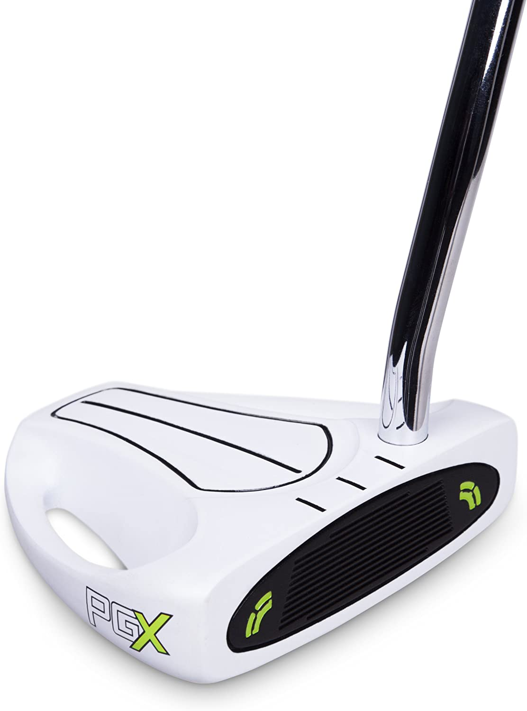
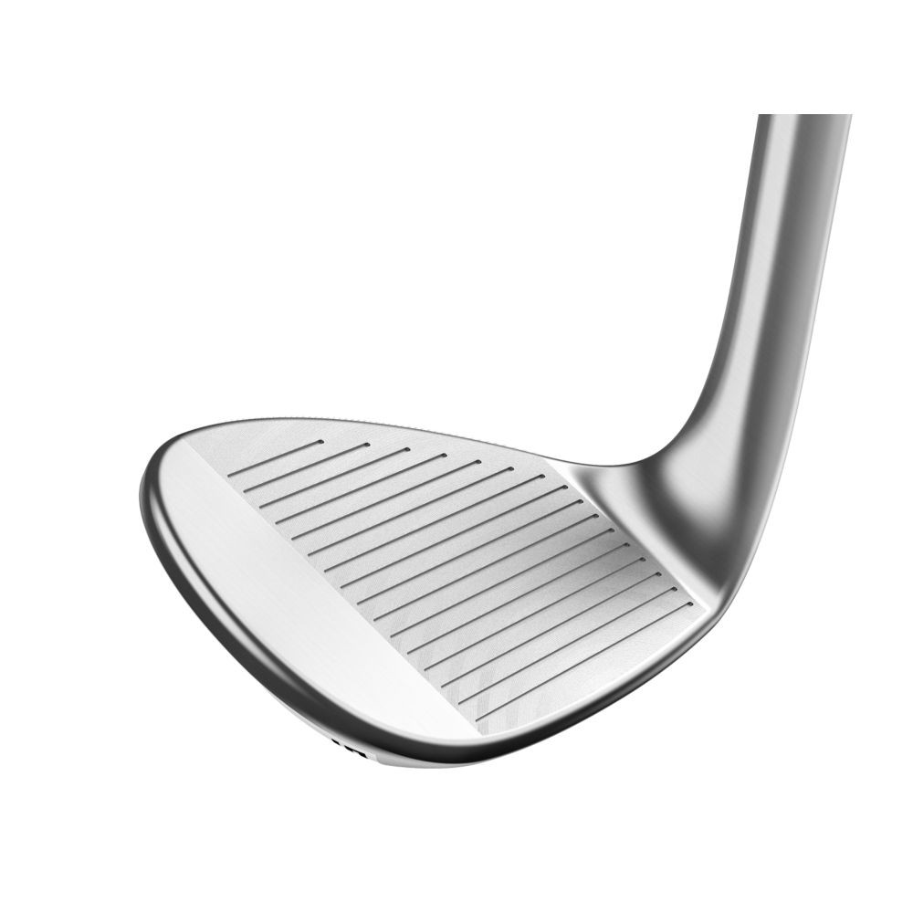
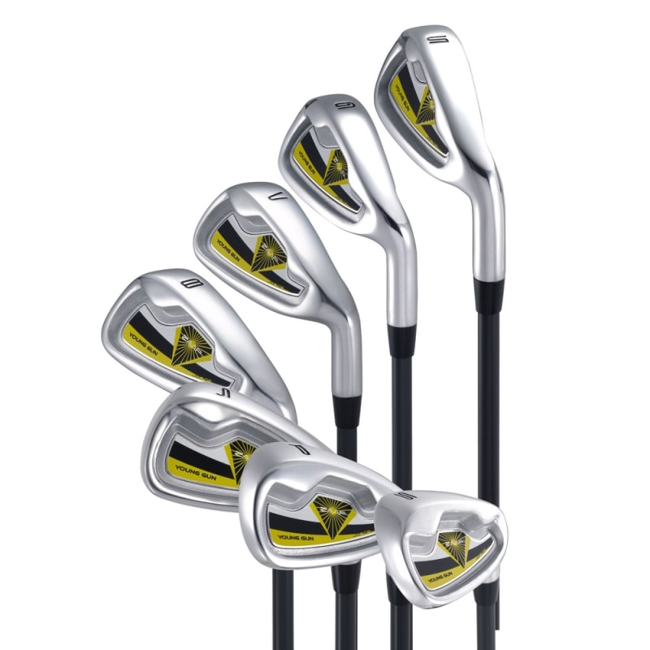
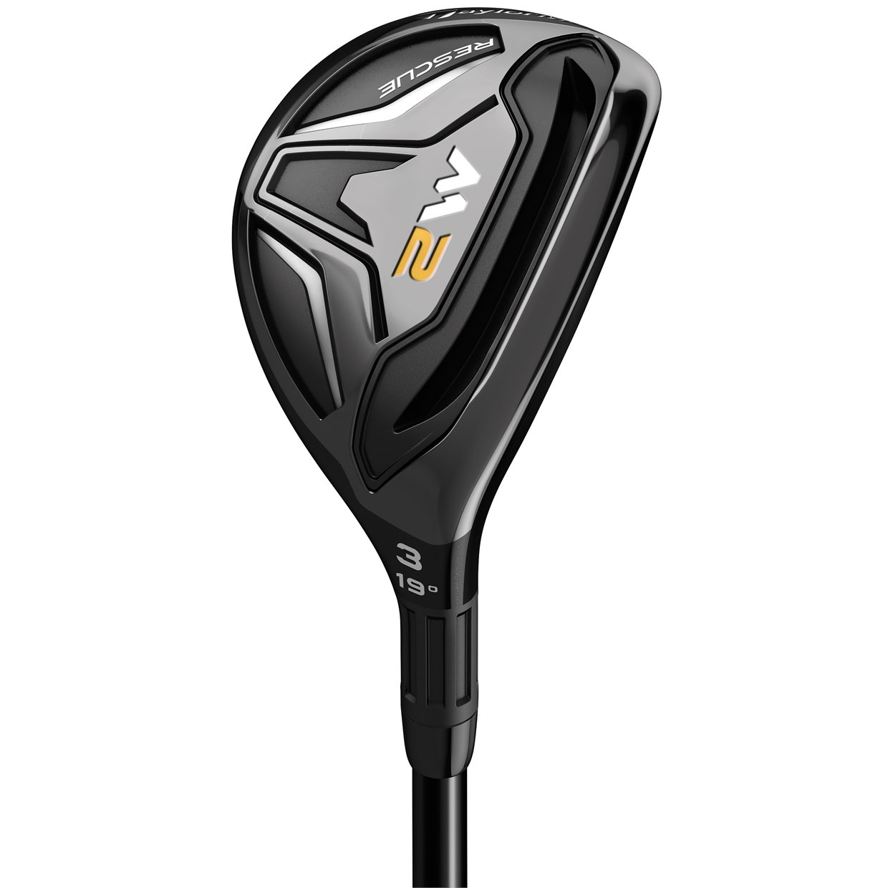
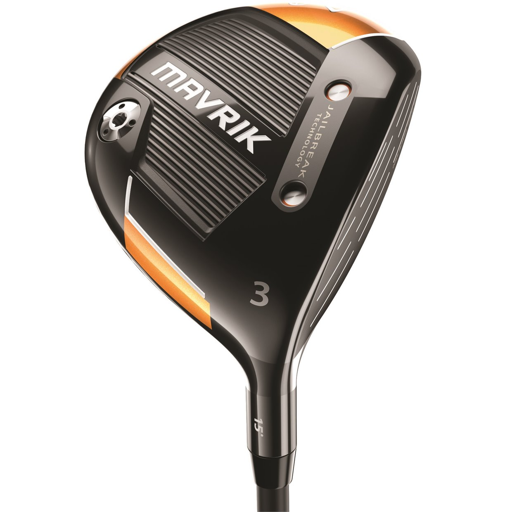
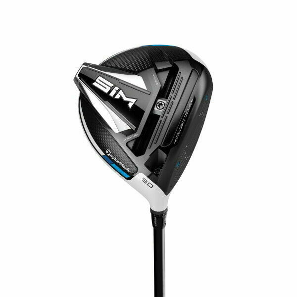

I have been playing golf for 4 years. It is a frustrating sport at times but it is fun once you learn what you are doing. There are many rules to learn but, they are easy once you start playing.
It will depend on the club but for irons you want your feet sholder width apart. But, for longer woods and the driver you want it a little wider. You should always keep your knees slightly bent and your body bent over the ball slightly. You need to keep your left arm straight and your head down the whole time.
| Putter | Used to hit the ball on the green. |  |
| Wedge | Used to hit short shots onto the green. |  |
| Irons | Can hit longer shots from 100-170 yards. |  |
| Hybrid | Hybrids are inbetween woods and irons distance. |  |
| Wood | Used to hit long shots when not on the tee box. |  |
| Driver | Used to hit far usually used off tee box. |  |